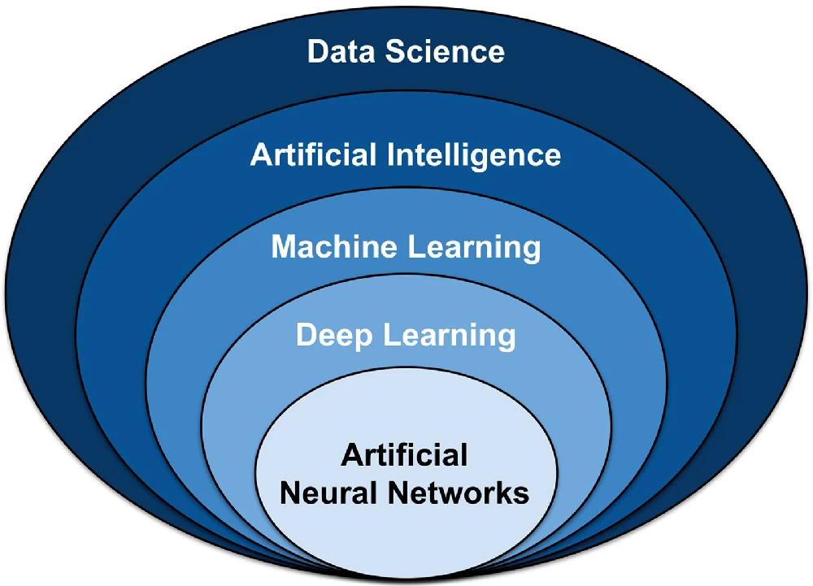
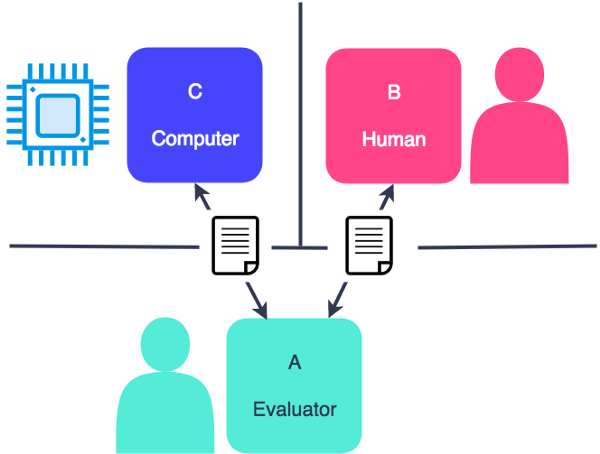
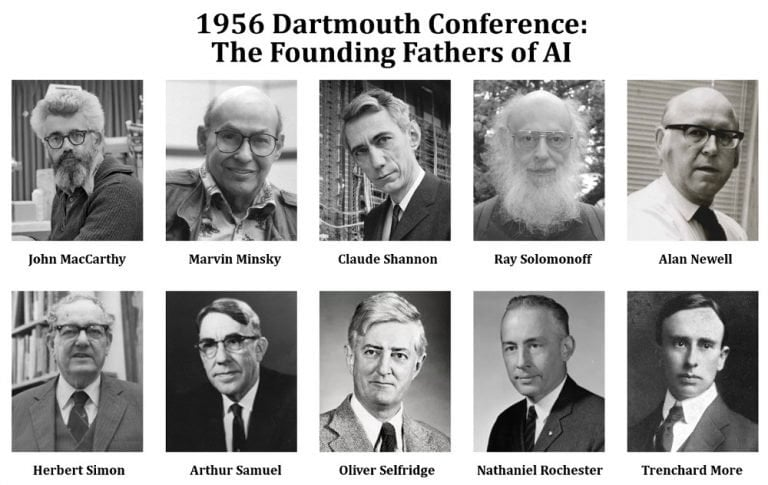
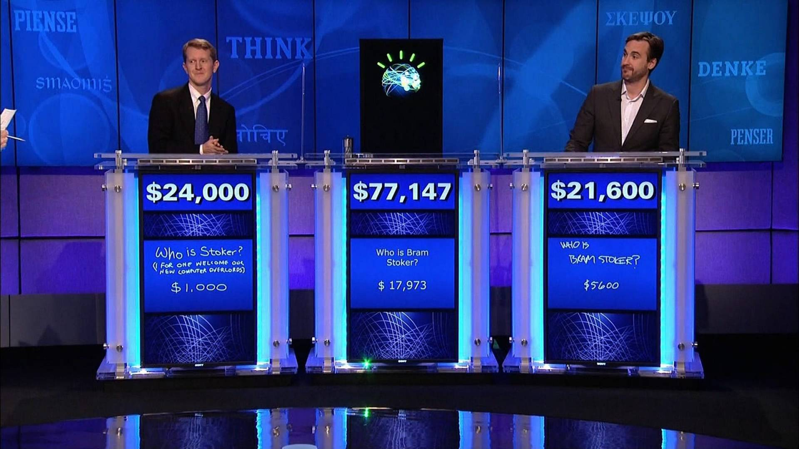
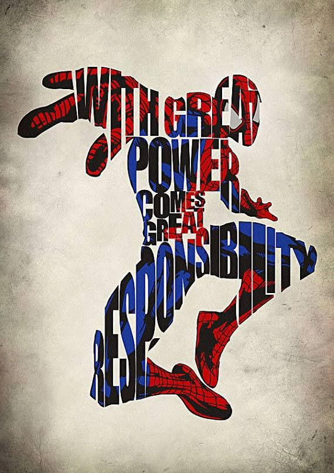
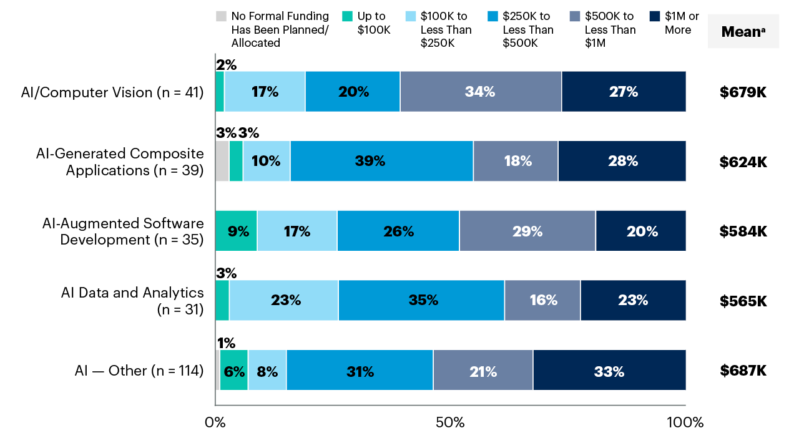

UD01: Caracterización de sistemas y utilización de modelos de Inteligencia Artificial¶
Modelos de Inteligencia Artificial¶
version: 2023-08-05¶
¿Qué veremos?¶
- Fundamentos de los Sistemas Inteligentes
- Tipos de Inteligencia Artificial. Escuelas y clasificaciones
- Utilización de modelos de Inteligencia Artificial
- Técnicas de la Inteligencia Artificial
- Campos de Aplicaciones de la Inteligencia Artificial
- Nuevas Formas de Interacción
- Mapa conceptual
1. Fundamentos de los Sistemas Inteligentes¶
Definición de Inteligencia Artificial (IA)¶
Primera definición:
"Habilidad para aprender y resolver problemas, llevada a cabo por una máquina o software"
Expertos coinciden en que es la simulación de procesos de inteligencia humana por parte de máquinas:
- El aprendizaje a través de la adquisición de información y reglas para el uso de la información.
- El razonamiento usando las reglas para llegar a conclusiones aproximadas o definitivas.
- La autocorrección.
Una definición más concreta y consensuada podría ser:
"La inteligencia artificial es la inteligencia llevada a cabo por máquinas. En ciencias de la computación, una máquina «inteligente» ideal es un agente flexible que percibe su entorno y lleva a cabo acciones que maximicen sus posibilidades de éxito en algún objetivo o tarea".
Los ordenadores (y con ellos la inteligencia artificial) no son ni buenos ni malos. Hacen lo que los humanos programamos que hagan.
La inteligencia y, sobre todo, la intencionalidad que pueda tener un programa o aplicación la proporciona el humano (o equipo de humanos) que lo definen y desarrollan.
Historia de la IA¶
A lo largo de la historia, la IA ha pasado por diferentes etapas de desarrollo, con avances y desafíos significativos.
Prehistoria de la IA o proto-IA (Antes del 1950): En 1943 McCulloch y Pitts presentaron un primer modelo de lo que podría ser una neurona artificial. Partieron de tres fuentes: * conocimientos sobre la fisiología básica y funcionamiento de las neuronas en el cerebro * análisis formal de la lógica preposicional de Russell y Whitehead * la teoría de la computación de Turing
En 1950, en el trabajo "Computing Machinery and Intelligence", Alan Turing propuso que la pregunta «¿puede pensar una máquina?» era demasiado filosófica para tener valor y, para hacerlo más concreto, propuso un «juego de imitación». Prueba de Turing 
Primeros Conceptos de IA (Décadas de 1950 y 1960): * "Inteligencia Artificial" acuñado por McCarthy en 1956 * >Every aspect of learning or any other feature of intelligence can be so precisely described that a machine can be made to simulate it
- se vinieron muy arriba 
- Creación del LISP en 1958
- Desarrollo de Micromundos en 1959 por Minsky y Papert en el MIT.
- demostrador de Teoremas de Geometría en 1959 por Herbert Gelernter.
- Investigación "sistemas expertos" en 1965 por Santford.
- Lanzamiento de ELIZA en 1966 (primer chatbot).
La Década del Estancamiento (1970): * Entre 1960 y 1970, estancamiento conocida como el "invierno de la IA". * Los avances prometidos no se materializaron * disminución en la financiación y el interés en el campo.
El Renacimiento de la IA (Décadas de 1980 y 1990): En la década de 1980, resurgimiento * Se desarrollaron nuevas técnicas de razonamiento, representación del conocimiento y búsqueda heurística. * Los sistemas expertos se convirtieron en una aplicación exitosa de la IA en medicina e ingeniería. * rivalidad entre Estados Unidos y Japón * creación de R1, el primer sistema experto comercial, en 1982 gracias a McDermott (en 4 años de implantación supuso un ahorro de 40 millones de dólares al año).
Aprendizaje Automático y el auge de la IA moderna (finales de los 90 y década de 2000 en adelante): * auge del Aprendizaje Automático. * disponibilidad masiva de datos y avances en algoritmos, las máquinas ahora pueden aprender patrones complejos * avances significativos en visión por computadora, el procesamiento del lenguaje natural y el reconocimiento de voz.
- El programa Deep Blue desarrollado por IBM logró vencer en 1997 al campeón del mundo en ajedrez, Gari Kaspárov.

- El sistema Watson, también de IBM, logró ganar en 2011 el popular concurso televisivo Jeopardy! frente a los dos máximos campeones de este programa. 
- La empresa DeepMind publicó "el vídeo de los 500 millones de dólares".
-
Google liberó Tensor Flow, su librería para Machine Learning, en 2015, permitiendo que cualquier persona pudiera acceder a sus servidores y crear su propio equipo con capacidad de autoprogramación y de aprender de forma autónoma.
-
La IA de AlphaGo de Google sorprendió a todos proponiendo en una partida de Go una jugada que nunca hubiera hecho un experto jugador humano... que en pocos movimientos más le dió la victoria.
- Ian Goodfellow presentó en 2014 su generador de imágenes basado en lo que conocemos como red GAN, logrando que un humano no sepa distinguir si se trata de imágenes reales o inventadas.
- La imagen de un rostro humano generado por IA: https://thispersondoesnotexist.com/
- Desarrollo de GPT3 por OpenAI a través de técnicas de Deep Learning.
- Lo más importante de esta tecnología son los 175 Billones de parámetros que utiliza la para conseguir dar textos naturales (con aspecto de haber sido escritos por humanos).
- GPT-4 representa la cuarta generación del Modelo de Predicción del Lenguaje, presentado en septiembre de 2022.
- cuenta con una impresionante cantidad de 250 Billones de parámetros, lo que le permite alcanzar un nivel de sofisticación sin precedentes en la creación de textos que parecen ser obra de escritores humanos expertos.
Aprendizaje Profundo (Deep Learning): * Una rama del Aprendizaje Automático * desarrollos más destacados en la IA moderna * Las redes neuronales profundas, altamente efectivas en tareas como el reconocimiento de imágenes, la traducción automática y el juego de estrategia. * La escalabilidad junto con las potentes GPU, ha impulsado el rápido progreso en el campo.
IA en la Sociedad Actual: * IA ha permeado en diversas áreas de nuestra vida cotidiana * Aplicaciones como: * motores de búsqueda en línea * asistentes virtuales * recomendaciones de productos y servicios * sistemas de navegación * automóviles autónomos * medicina para el diagnóstico y tratamiento * en finanzas para la detección de fraudes * en la industria para optimizar procesos de producción.
Desafíos Actuales y Futuros: * avances impresionantes, todavía desafíos: * la interpretabilidad y explicabilidad de los modelos de IA, especialmente en aplicaciones críticas donde las decisiones pueden tener un impacto importante en las vidas humanas. * el sesgo en los datos y la falta de diversidad, lo que puede llevar a resultados injustos o discriminatorios. * Es esencial abordar estos desafíos y asegurar que su desarrollo y aplicación se realicen de manera ética y responsable.
¿La Inteligencia Artificial es buena o mala? * Piensa en diferentes momentos: El dominio del fuego, la rueda, el hormigón, la pólvora, la imprenta, la radio, Internet... * La tecnología en sí misma no es ni buena ni mala. Son las personas que la conocen y controlan quienes pueden hacer un uso beneficioso o dañino de ellas. * ¿Te suena la frase "Un gran poder exige una gran responsabilidad"? * La IA nos da un poder muy grande hemos de ser responsables al utilizarla. 
El futuro de la IA¶
- Los campos en los que más se ha desarrollado y aplicado la IA en estos últimos años son:
- Sistemas autónomos
- Aprendizaje Autónomo (Machine Learning)
- Aprendizaje Profundo (Deep Learning)
- Redes neuronales.
- Reconocimiento de patrones
- Procesado del lenguaje natural
- Desarrollo de chatbots
- Reconocimiento de emociones
- En la actualidad se está trabajando (y se esperan mejoras en los próximos años) en campos como:
- Asistentes virtuales
- Traducción simultánea universal.
- Control de juegos con el pensamiento.
- Y a medio plazo se prevé que la Inteligencia Artificial proporciones soluciones y mejoras en los siguientes ámbitos:
- Nueva generación de robots interconectados con la nube.
- Robots médicos autónomos.
- Asistentes personales robóticos.
- Ciber-Seguridad cognitiva.
- Y a largo plazo se vislumbra que puedan llegar a desarrollase computadoras robóticas con forma y comportamiento humano.
Inversión en proyectos de IA
En los últimos años la Inteligencia Artificial es el primer o segundo ámbito en el que más dinero están dispuestas a invertir las empresas

Limitaciones Prácticas Actuales * Existen limitaciones prácticas actuales en el campo de la IA que aún no se han superado por completo: 1. Complejidad de la mente humana 2. Memoria y recursos limitados 3. Falta de comprensión de la conciencia 4. Ética y responsabilidad 5. IA en entornos no controlados 6. Creatividad e intuición 7. Emociones y empatía 8. Interacción social humana * >Es importante tener en cuenta estas limitaciones y reconocer que la IA actual está lejos de igualar la inteligencia humana en todos sus aspectos. Sin embargo, esto no implica que no haya avances significativos en el campo de la IA, ni que no se puedan superar algunas de estas limitaciones en el futuro.
Principios de Sistemas Inteligentes¶
- Sistema informático
-
el conjunto de cosas (hardware y software) y al conjunto de reglas (procedimientos) que de manera conjunta se emplean para el fin último de adquirir, almacenar, procesar y representar la información de manera automatizada.
- Inteligencia artificial es un subconjunto de la informática
- Un sistema de inteligencia artificial ha de ser por extensión un subconjunto dentro de los sistemas informáticos.
* >Se denominará, por tanto, sistema inteligente a un programa o conjunto de programas de computación que reúne características y comportamientos asimilables al de la inteligencia humana o animal.¶
- Para que un sistema informático pueda ser considerado un sistema inteligente, habrá de tener las características que se enumeran a continuación:
- ser un sistema inteligente.
- las partes del sistema han de tener correlaciones con otros elementos del mismo sistema.
- capaz de cumplir uno o varios objetivos
- ha de disponer de capacidad sensorial
- necesidad de poder almacenar información.
- ha de disponer de procedimientos y métodos con reglas de actuación
- El sistema aprende nuevos conceptos a partir de la información recibida de los sentidos, las reglas conocidas y la experiencia.
-
Los primeros sistemas inteligentes, como los sistemas de expertos, no cumplen todas estas características por lo que reciben el nombre de sistemas de inteligencia incompletos.
La inteligencia artificial (IA) es un área de cambio social, transforma rápidamente hábitos y costumbres, ha de prestarse mucha atención, y marcar una serie de límites éticos. Principios fundamentales o éticos de la IA son:
- La IA debe estar libre de prejuicios, puede generar discriminantes negativas, toda IA debe programarse sin conjuntos sesgados. Se introducen continuamente sesgos de manera involuntaria e inadvertida. >Sistemas de ayuda médica entrenados en varones blancos de entre 30 y 50 años de edad podrán dar resultados buenos sobre el grupo para el que se ha desarrollado, pero pueden actuar no tan correctamente en otras categorías.
- Ayudar a ayudar. Se debe de identificar de forma clara la responsabilidad de las decisiones tomadas por los sistemas autónomos.
3. Uso de algoritmos abiertos. Para poder confiar en la respuesta de una IA es preciso tener acceso limpio al algoritmo de entrenamiento y de toma de decisiones que posee, lo que comporta acceso a todo su modelo matemático.¶
- Seguridad, privacidad y confiabilidad. Dado que las IA hacen uso de gran cantidad de datos, se ha de velar por la transparencia y la privacidad en el uso de los mismos.
Un asistente virtual ha de garantizar que las conversaciones escuchadas no se filtrarán ni difundirán a terceros.
5. Bien común. Ningún sistema de IA debería ser desplegado si al hacerlo se atenta contra el bien común.¶
Los agentes inteligentes son entidades capaces de percibir su entorno a través de sensores y actuar en él mediante efectores para alcanzar objetivos específicos.
Componentes de un Agente Inteligente: 1. Sensores (S): Los sensores son dispositivos que permiten al agente percibir información sobre su entorno. Pueden incluir cámaras, micrófonos, sensores de temperatura, GPS, entre otros. La información que los sensores recopilan se utiliza para representar el estado actual del entorno.
- Actuadores (A): Los actuadores son los medios mediante los cuales el agente interactúa con su entorno. Pueden ser ruedas en un robot, motores en un brazo robótico o simplemente salidas de datos en un sistema de software. Los actuadores permiten que el agente realice acciones para alcanzar sus objetivos.
- Función del Agente (f): La función del agente representa el comportamiento del agente en función de las percepciones que recibe. Toma como entrada el estado actual del entorno y devuelve una acción que el agente debe ejecutar. Esta función puede ser simple o compleja, dependiendo de la complejidad de la tarea que el agente debe realizar.
4. Arquitectura (A): La arquitectura del agente se refiere a cómo se organiza el agente en términos de sus componentes y cómo interactúan entre sí. Puede haber diferentes arquitecturas según la complejidad de la tarea y los requisitos de rendimiento.¶
Ejemplo de Agente Inteligente:: un sistema de navegación GPS en un automóvil. * Sensores (S): El sistema de navegación utiliza sensores GPS para recibir información sobre la ubicación actual del automóvil y sensores de velocidad para conocer su velocidad y dirección. * Actuadores (A): Los actuadores son los mecanismos que permiten al sistema de navegación proporcionar instrucciones al conductor para alcanzar el destino deseado, como la pantalla de navegación o las indicaciones de voz. * Función del Agente (f): La función del agente en este caso podría ser bastante simple: recibir la ubicación actual y el destino deseado, calcular la ruta más rápida y segura y guiar al conductor a lo largo del camino. * Arquitectura (A): La arquitectura del sistema de navegación podría ser una combinación de algoritmos de planificación de rutas, sistemas de reconocimiento de voz para recibir comandos del conductor y sistemas de visualización para mostrar las indicaciones.